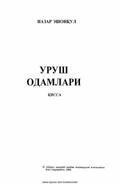

UOUrushdan nogiron bo'lib qaytgan insonlarning og'ir hayoti va taqdiri haqidagi qissa.
Ushbu asar urushdan nogiron bo'lib qaytgan insonlarning og'ir taqdiri, jamiyatdagi o'rni va urush keltirgan fojialar haqida hikoya qiladi. Normat polvon va boshqa qishloqdoshlar misolida urushdan keyingi davr hayoti realistik tarzda ochib berilgan.